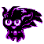
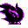

#164
Misdreavus
Ghost
It startles foes with eerie cries that echo at night Round gems glow around its neck
Base stats Total 350
HP60
Attack60
Defense60
Speed85
Special85
Details
- Species
- Screech
- Height
- 2'04"
- Weight
- 22.0 lb
- Catch rate
- 45
- Base exp
- 147
- Growth
- Medium Slow
Level-up moves
LevelMoveType
StartPsywavePsychic
StartConfuse RayGhost
Lv 6GrowlNormal
Lv 9LickGhost
Lv 17HypnosisPsychic
Lv 20ConfusionPsychic
Lv 23Confuse RayGhost
Lv 25Night ShadeGhost
Lv 26PsybeamPsychic
Lv 39Shadow BallGhost
Evolution
Where to find
TM / HM
TM06 ToxicTM07 Shadow BallTM10 Double-EdgeTM15 Hyper BeamTM24 ThunderboltTM25 ThunderTM29 PsychicTM31 MimicTM32 Double TeamTM39 SwiftTM42 Dream EaterTM44 RestTM45 Thunder WaveTM46 PsywaveTM50 SubstituteHM05 Flash